El Rastro de hoy
Multitud, turismo, ropa, música y ruido superpuesto.
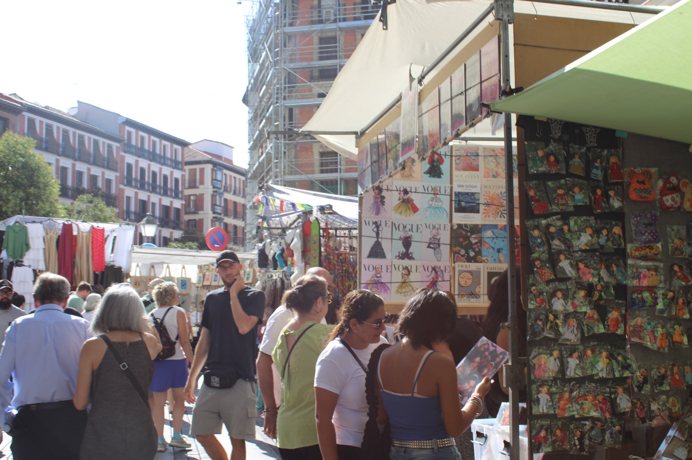
Proyecto documental · Madrid
Una mirada al Rastro de Madrid a través de las voces, los objetos y las huellas que todavía permanecen.
Baja para recorrerlo ↓
El Rastro se construye entre pasos, objetos, voces y encuentros que suceden al mismo tiempo.
01 / El comienzo
Cuando pensé en El Rastro, lo primero que me llamó la atención no fueron solamente los puestos o los objetos. Fue todo lo que se escuchaba alrededor.
Vendedores gritando, personas preguntando cuánto cuesta algo, conversaciones que se mezclan, música en la calle y voces que aparecen y desaparecen mientras caminas. Ese ruido no está de fondo: forma parte de la identidad del lugar.
Por eso este proyecto parte de una idea sencilla: escuchar El Rastro como una forma de entenderlo.
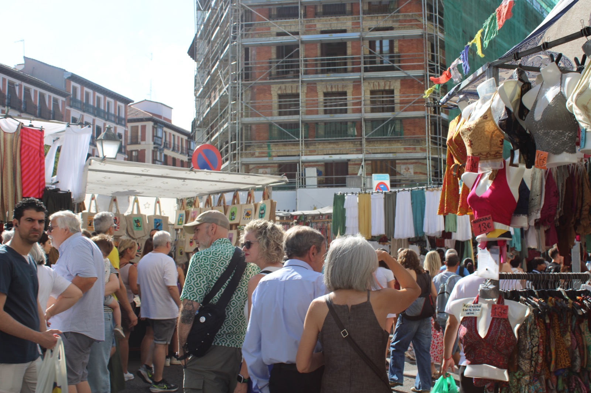
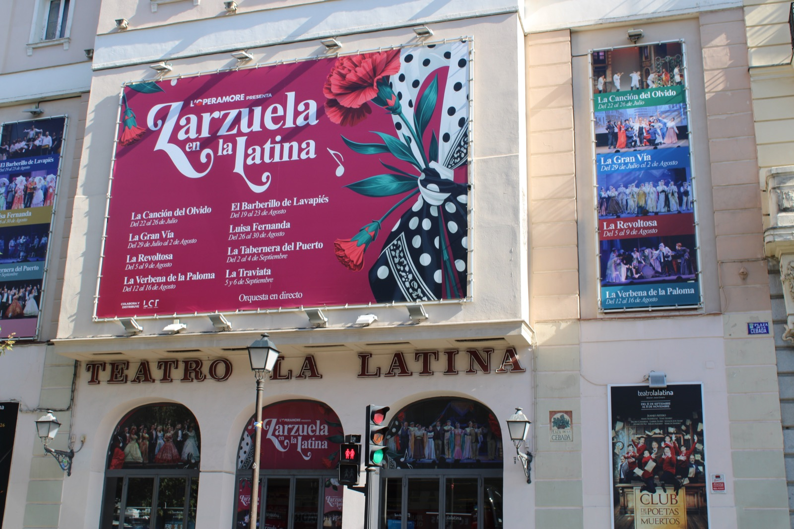
02 / El viaje sonoro
Un viaje sonoro desde el Rastro de hoy hasta las calles donde todavía sobrevive el de antes.
Cuanto más avanzas,
más atrás parece llevarte el sonido.
Audio pendiente de incorporar
Multitud, turismo, ropa, música y ruido superpuesto.
Los sonidos nuevos empiezan a mezclarse con puestos de segunda mano.
Calles menos transitadas, vendedores antiguos y objetos con historia.
Un cierre íntimo hecho de testimonios y pequeños sonidos de ambiente.
03 / Lo que queda
Cosas usadas, encontradas, heredadas y vueltas a mirar.
Al hacer clic en una fotografia aparece un pequeno sonido relacionado con su material, su uso o la accion de buscarlo. La intencion no es hacer que el objeto “hable”, sino imaginar que sonido podria haber dejado a su paso.
Toca un objeto para escucharlo ↗
04 / Recorrido
Una calle que cambia mientras avanzas. Las imagenes cambian, pero tambien cambia lo que se escucha.
El recorrido empieza donde todo sucede al mismo tiempo. Hay mas gente, mas turismo, ropa, productos nuevos y un sonido mucho mas saturado.
Aqui se escuchan muchas voces a la vez. Es dificil seguir una sola.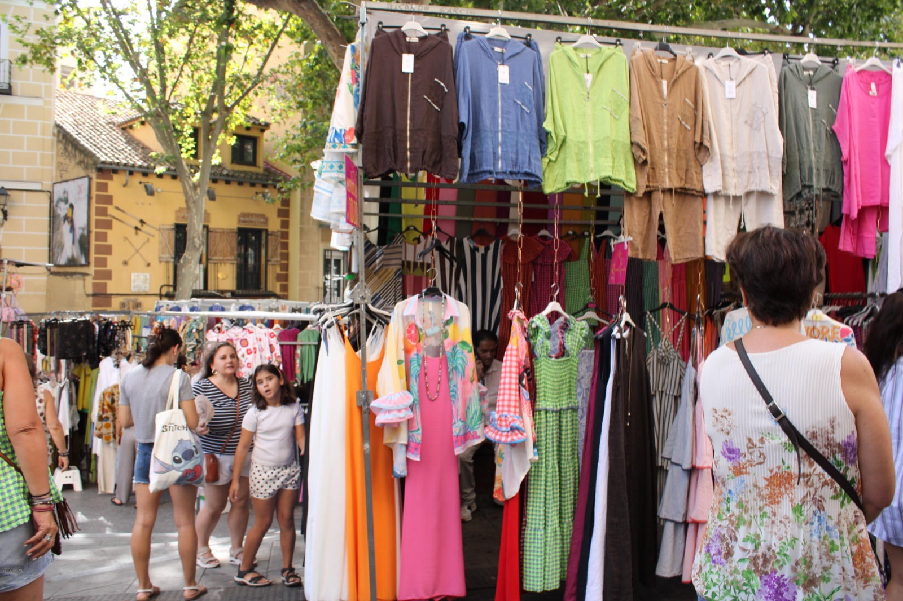
Lo nuevo sigue presente, pero aparecen vinilos, libros, objetos usados y personas que se detienen a buscar.
El ruido baja un poco. Empiezan a distinguirse acciones.En las calles menos transitadas aparecen vendedores que llevan anos ahi, antiguedades y compradores que se quedan a conversar.
Aqui las voces se separan del ruido.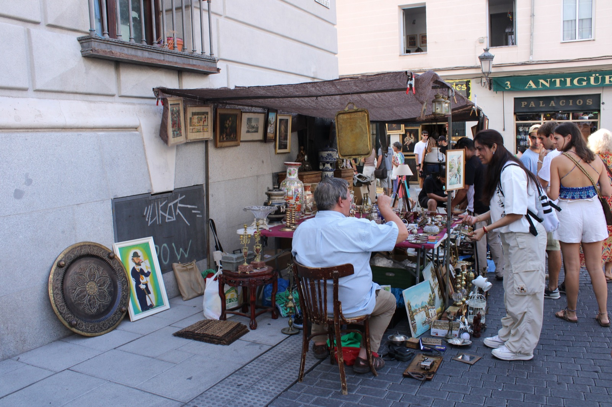
Seguir caminando tambien es seguir escuchando.
05 / Personas
Detras de cada puesto hay una persona, una rutina y una forma distinta de entender el mercado.
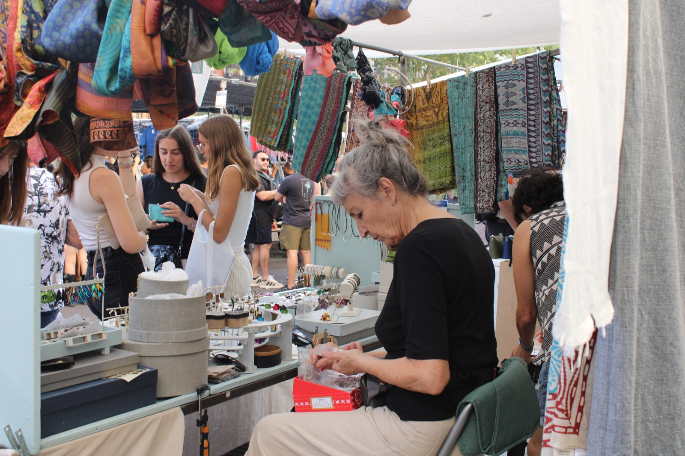
Ordenar, preparar, explicar y atender. La intencion es acercarse a quienes sostienen el Rastro cada domingo, sin inventar sus voces.
Las entrevistas reales se incorporaran aqui.
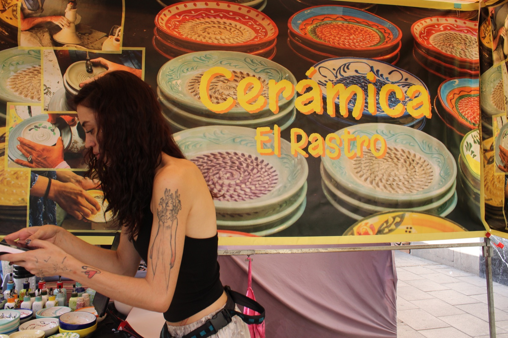
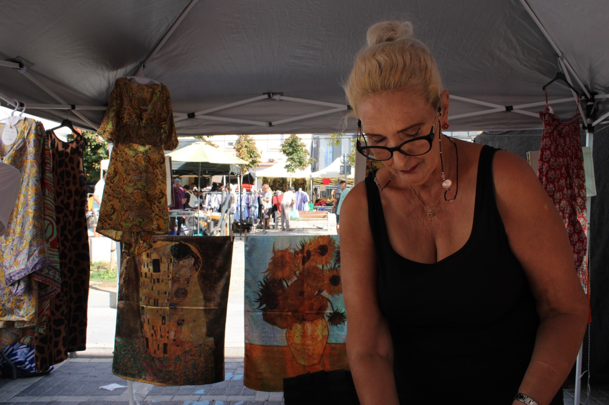
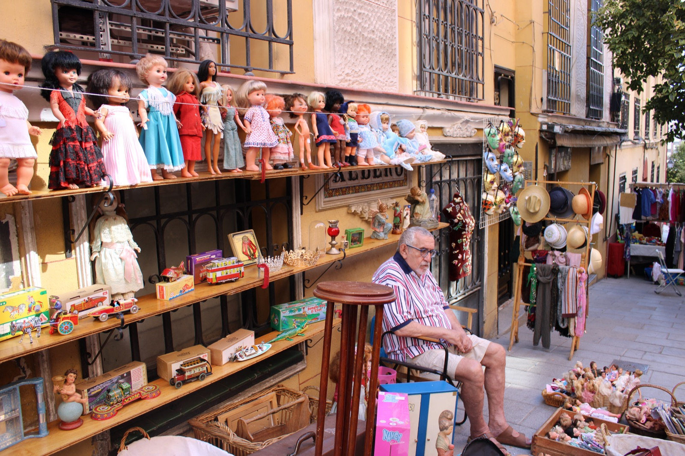
06 / Archivo visual
Escenas, detalles, objetos y personas encontrados durante el recorrido.
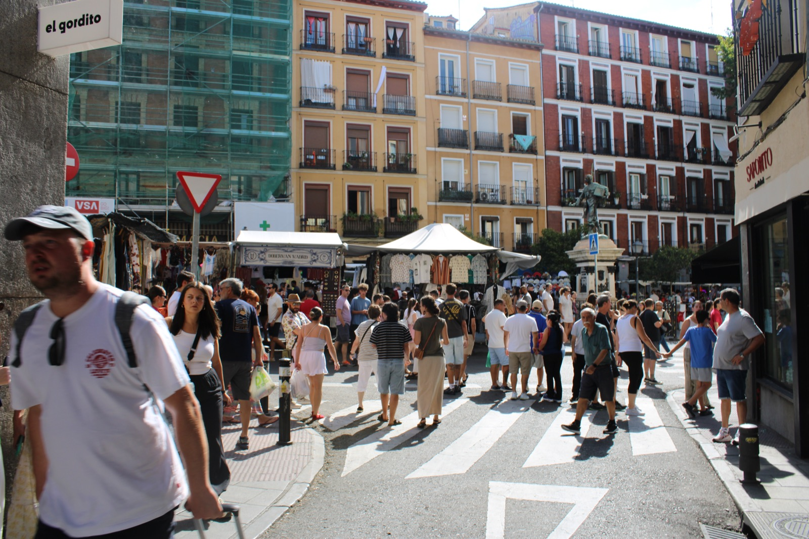
Reel · 00:4507 / Pieza audiovisual
Un reel breve para ver y escuchar como cambia el mercado mientras lo recorres.
El video final se incorporara aqui.
08 / Contraste temporal
Imágenes antiguas y nuevas para mirar el mismo lugar desde tiempos distintos.
El comparador pone en diálogo una escena histórica con una fotografía actual del Rastro. No se trata de demostrar que antes era mejor, sino de observar qué cambia y qué sigue siendo reconocible.
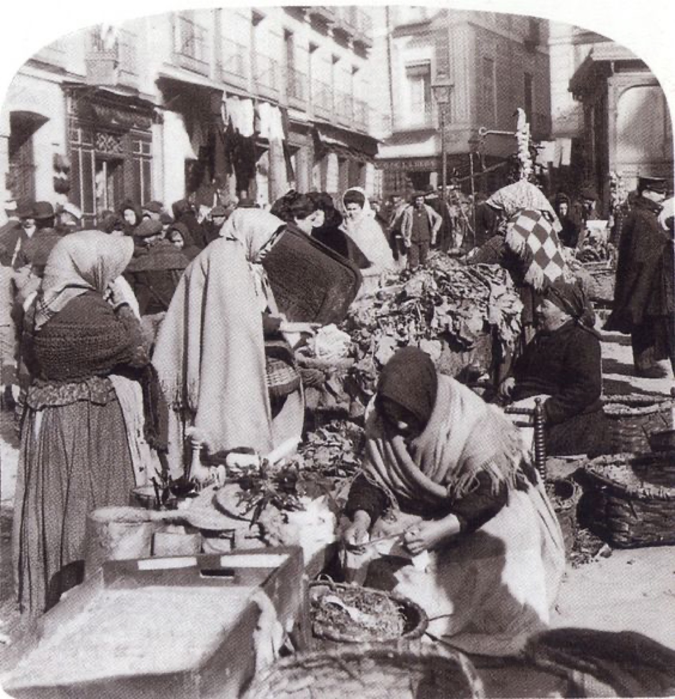
Imagen sacada de El Baúl del Arte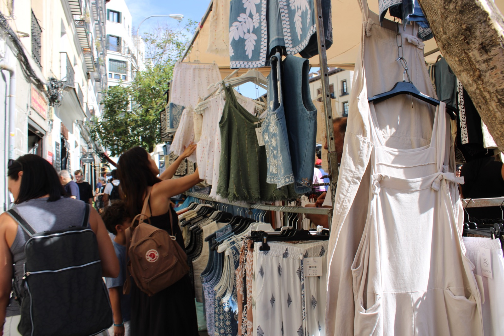
Desliza para cubrir la imagen antigua con la moderna ↔
09 / Mi mirada
Llegue al Rastro pensando en un mercado y termine interesandome mas por todo lo que pasaba alrededor de los objetos.
Mientras caminaba, empece a fijarme en las voces: como se anuncia algo, como se pregunta un precio o como una conversacion puede hacer que te detengas aunque no estuvieras buscando nada.
Quise mirar menos al mercado como postal y mas como un lugar vivo.
Proyecto y recorrido visual por
Mariana Balado Fernandez
10 / Cierre
El Rastro cambia cada domingo y, al mismo tiempo, nunca empieza de cero. Quedan objetos, historias, sonidos, costumbres y personas.